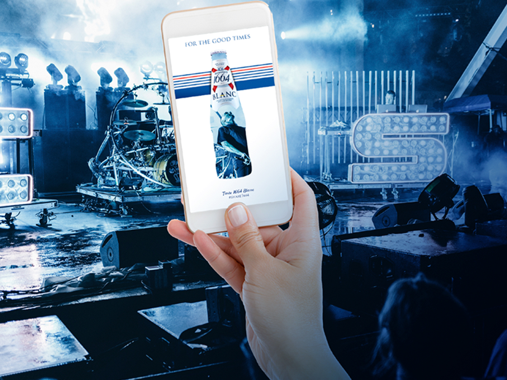

Kort og godt; 1664 Blanc er særlig genkendelig på dens ikoniske blå glasflaske, som skiller sig ud fra mængden.
Hvedeøllen har en hvid gylden farve med en karakteristisk smag af et syrligt bid af citrus og søde aromaer. 1664 Blanc er en hyldest til livet og glæden og den gode smag. Den er lige til – og helt enkel. Det er en fransk øl, der matcher de fleste lejligheder, når det er tid til forkælelse af dig selv og vennerne – både derhjemme, i parken og på cafeen. Den er anderledes, og farven skiller sig ud i mængden. For 1664 Blanc er unik, men aldrig alene. Og den er fransk – men aldrig højrøvet. Den er sofistikeret – men ikke kompliceret. Og så er 1664 Blanc langt mere til gadens stil – og mindre til catwalkens dikterende trends.
Næringsindhold
Alkoholprocenten er 4.5%. Brygget med et et fransk touch. 1664 Blanc er en øl med et hint af citrusfrugt og koriander.
Kalorier: 172KJ - 41kcal
Fedt: 0g
Protein: 2,8g
Kulhydrater: 0,5g
Sodium: 11mg
Kampagnen
Kort og godt; 1664 Blanc er særlig genkendelig på dens ikoniske blå glasflaske, som skiller sig ud fra mængden. Hvedeøllen har en hvid gylden farve med en karakteristisk smag af et syrligt bid af citrus og søde aromaer.
Konkurrence
Fang dine blå momenter med 1664 Blancs Instagram filter og vær med i konkorrencen om 2 billetter til Paris! Det eneste du skal gøre er at poste dit "blå moment" på Instagram. Du kan finde det blå filter nedenstående.

De sociale medier
Du kan både finde os på Instagram og Facebook. Vi elsker at vise jer vores blå univers og 1664 Blanc. Hvis du har lyst til at følge med i 1664 Blanc's kampagne kan du finde os på de sociale medier.